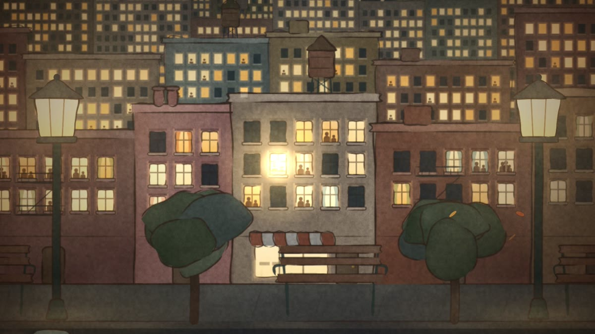
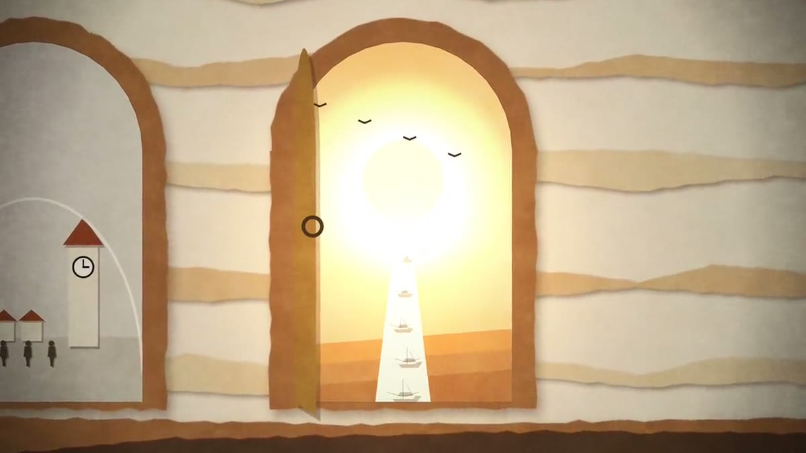
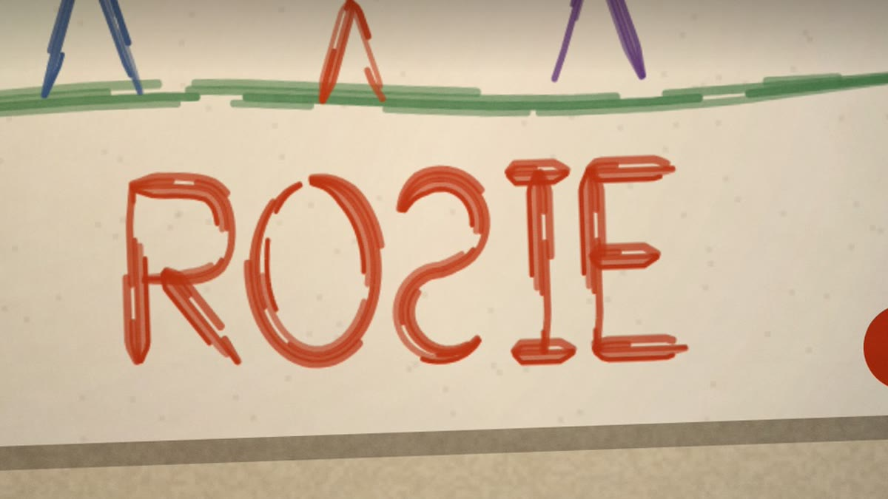

Ten Thousand Windows
Mara tests a machine called Hearth at three in the morning, and her daughter Wren asks the same question every night. You make seven choices about the next few years. One of nine endings finds you.
BeginPainted stories about the next few years of AI, set at kitchen tables and bedsides around three in the morning. Every frame is drawn in code. Turn the sound on.

Mara tests a machine called Hearth at three in the morning, and her daughter Wren asks the same question every night. You make seven choices about the next few years. One of nine endings finds you.
Begin
A father tells his daughter a bedtime story about a river that could think.

A song for the year the machines started writing things we can't read. A parent at a kitchen table at 3 a.m.
The labs in these stories are made up. The research behind Ten Thousand Windows is real, and every source is linked inside it.